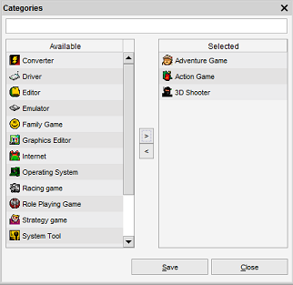

Multi-Reference Fields
With this field multiple references can be assigned to an item.

Each of the listed items can be clicked upon to review the details (in the example above you could for example click on Algeria
and the country details would be displayed).
In case you are missing an item a new item can be created straight away.
To add a new item press the  button. This will open
a new item form where the values can be entered. Press "Save" once satisfied and the item will be added to the selected items.
button. This will open
a new item form where the values can be entered. Press "Save" once satisfied and the item will be added to the selected items.
Selecting Items
To assign and/or remove items click on the icon.
The assignment dialog is opened.

On the left hand side the available items (countries in above example) are shown. These items are not assigned to the item
and are available to be assigned to the item. On the right hand side the selected items are shown. These items
are currently assigned to the item.
Filtering
You can filter by typing in the text field located at the top of the screen. The available items list is filtered while you
are typing. It looks for items where the name starts with the entered value. Removing the entered text case all items to be shown.
Selecting Items
You can double-click on the item to assign it. To remove an assigned item double click on the corresponding
assigned item.
Instead of double-clicking you can also use the '>' or the '<' button. Select the items you want to assign or unassign by clicking
on them while holding the CTRL key and press the corresponding arrow button.
Applying the Selected Items
Press "Save" to store the changes.